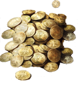

Zapraszam do korzystania Wszelkich MG jak i BG!!!!
Projekt powstał dla graczy Warhhamer 4e lecz w projekcie jest wiele elementów z 2e Grajcie i Bawcię się dobrze.
Mam nadzieję że moja praca pomoże przy rozwiązaniu niektórych problemów MG jak i BG. Pozdrawiam
Nioch Nioch